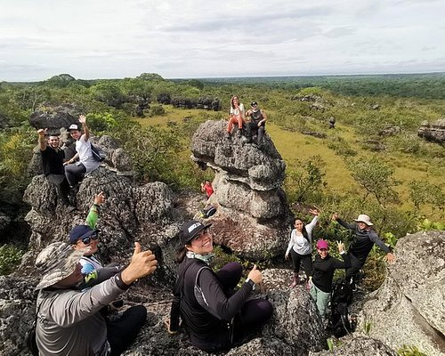

En la sierra de la macarenma encontaras una basta cantidad de flora y fauna, ademas de maravillosos paisajes que dejan atonitos a todos nuestros visitantes
¿Que esperas para vivir esta aventura?
La Serranía de la Macarena es considerada por los científicos de todo el mundo como uno de los refugios de vida silvestre más sobresalientes del planeta y es una de las reservas naturales más hermosas de la patria
Entre julio y noviembre es la época ideal para visitar el Parque Nacional Natural Sierra de La Macarena, al que se puede llegar en avión desde Villavicencio y Bogotá. El parque, de 630.000 ha, alberga uno de los espectáculos más impactantes del mundo: el de Caño Cristales, cuyas aguas adquieren los colores del arcoíris gracias a unas plantas acuáticas llamadas macarenias.
Ofrecemos una variedad de actividades para los visitantes que deseen explorar su belleza natural y su rica biodiversidad. Algunas de las actividades más populares que se pueden realizar en la Sierra de la Macarena incluyen:
Visita al Caño Cristales: El Caño Cristales, a menudo llamado "el río de los cinco colores" o "el río más hermoso del mundo", es una de las atracciones más famosas de la Sierra de la Macarena. Durante la temporada de lluvias, las plantas acuáticas en el lecho del río crean una paleta de colores sorprendente, que incluye rojo, amarillo, verde y azul. Los visitantes pueden hacer caminatas y recorridos en bote para disfrutar de esta maravilla natural.
Observación de aves: La Sierra de la Macarena es un paraíso para los amantes de las aves, ya que alberga una gran diversidad de especies, incluidas guacamayas, tucanes, águilas y muchas otras aves tropicales. Los observadores de aves pueden disfrutar de recorridos guiados para identificar y observar estas especies en su hábitat natural.
Senderismo y caminatas: Hay numerosos senderos y rutas de senderismo en la Sierra de la Macarena que ofrecen oportunidades para explorar la selva tropical, observar la flora y fauna, y disfrutar de la belleza natural de la región. Los senderos varían en dificultad, por lo que hay opciones para todos los niveles de habilidad.
Visita a las cascadas: La región cuenta con hermosas cascadas y piscinas naturales que son ideales para nadar y refrescarse en el clima tropical. Algunas de las cascadas más conocidas incluyen la Cascada de La Virgen y la Cascada de Caño Piedra.
Espeleología: Los amantes de la espeleología pueden explorar algunas de las cuevas y grutas que se encuentran en la Sierra de la Macarena, como la Cueva de Guácharos. Estas cuevas a menudo albergan colonias de murciélagos y ofrecen una experiencia única bajo tierra.
Observación de vida silvestre: Además de aves, la Sierra de la Macarena es el hogar de una variedad de mamíferos, reptiles y anfibios. Los visitantes pueden realizar recorridos guiados de observación de la vida silvestre para tener la oportunidad de ver jaguares, pumas, monos y otras especies en su hábitat natural.
Cultura y comunidades locales: También es posible aprender sobre la cultura y las tradiciones de las comunidades locales que habitan la Sierra de la Macarena. Puedes visitar pueblos cercanos y aprender sobre la vida cotidiana de la gente de la región.

created with
Website Builder Software .